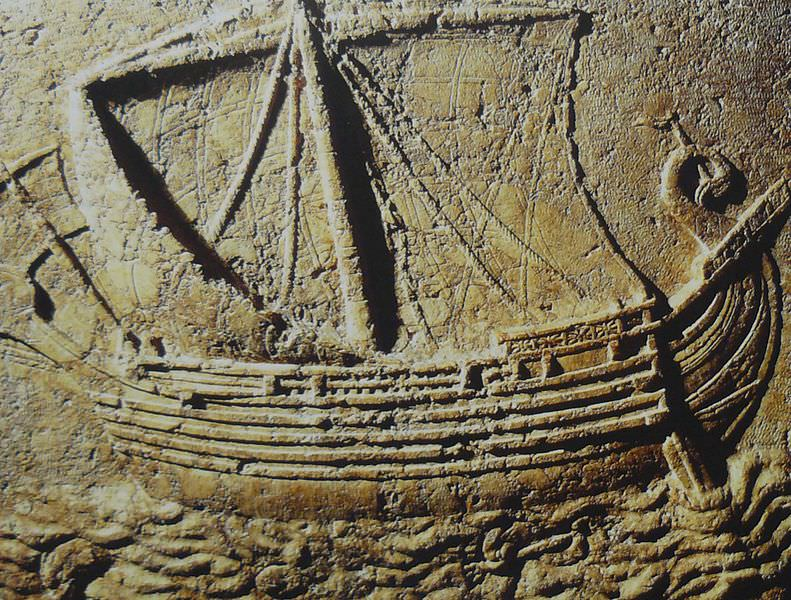
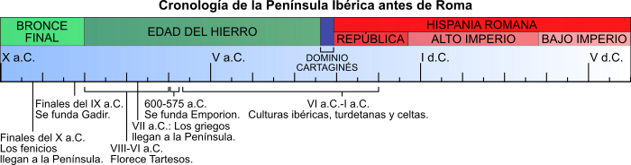

La Península Ibérica antes de Roma
Patrimonio Cultural |
||
|
Patrimonio Cultural Nivel 1 |
Contenidos |
|
| La Península Ibérica antes de Roma: | ||
| Pueblos Prerromanos y Primeras Colonizaciones. | ||
CONTENIDOS PREVIOS
Antes de comenzar con este apasionante tema, es necesario aclarar una serie de conceptos que ayudan a comprender la cronología basada en el uso de la escritura.
Decimos que un pueblo está en la Prehistoria, en lo que se refiere a su nivel de desarrollo cultural, cuando ese pueblo no maneja la escritura ni tiene contacto con otros pueblos que lo hacen y, en consecuencia, todas las fuentes que tenemos para conocer a ese pueblo son arqueológicas.
Decimos que un pueblo está en la Protohistoria cuando no maneja la escritura, pero tienen contacto con otros que sí lo hacen. (A comienzos del 1º milenio a. C la costa sur-levantina de la Península Ibérica ya estaba en la Protohistoria, mientras que el resto de la península permanecía en la Prehistoria )
Decimos que un pueblo ha entrado en la Historia cuando maneja la escritura. (En el S VII a.C. algunos pueblos del sur, como los Tartesios, ya habían entrado en la historia, mientras que los pueblos del interior de la península no entrarán en la Protohistoria hasta el SII a. de C., cuando llegan allí los romanos , es decir unos 700 años más tarde).
INTRODUCCIÓN
La entrada de la Península Ibérica en la Historia se debe a las navegaciones de pueblos procedentes del oriente mediterráneo. Estos pueblos, que ya dominaban la escritura, llegaron a nuestras costas y dejaron registros escritos sobre la población autóctona que encontraron. Posteriormente, enseñaron a los indígenas a escribir, lo que permitió que comenzáramos a tener fuentes escritas por los propios habitantes de la península.
El mundo indígena evolucionó por el contacto con sucesivas colonizaciones de fenicios y griegos y hubo de reaccionar a las invasiones cartaginesa y romana. Roma dominó por la fuerza nuestra Península, sometida a siglos de guerra. Pero de ella nació un mundo nuevo, la Hispania romana, del que somos herederas y herederos directos.
Veamos qué pasaba en nuestra península mientras fuera de ella se sucedían y mezclaban las civilizaciones de Próximo Oriente, Grecia y Roma.
|

Barco fenicio púnico (CC BY-SA)
|
|  |
| Imagen de elaboración propia. |
¿CUÁNTO SABES ?
¡Hola a todos y todas!
Este cuestionario tiene como objetivo evaluar vuestros conocimientos previos sobre las primeras civilizaciones de la península ibérica.
¡Animaos a participar y a seguir descubriendo nuestro pasado!
¡Vamos a ello!
PINCHA AQUÍ PARA REALIZAR EL CUESTIONARIO
Obra publicada con Licencia Creative Commons Reconocimiento No comercial Compartir igual 4.0